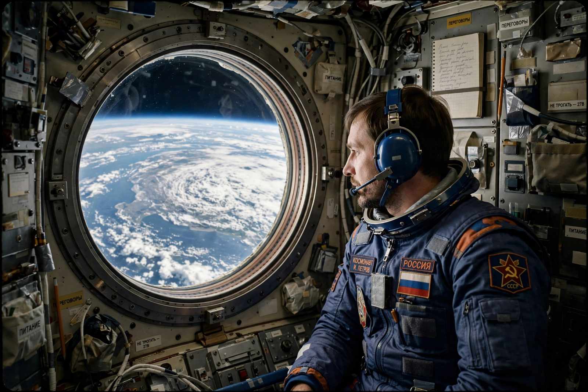

Valeri Polyakov
From Wikipedia, the free encyclopedia
| Valeri Polyakov | |
|---|---|
| Born | 27 April 1942, Tula, Russian SFSR |
| Died | 7 September 2022 (aged 80) |
| Occupation | Cosmonaut, physician |
| Record | Longest single spaceflight: 437 days |

Polyakov aboard Mir.Valeri Vladimirovich Polyakov (1942–2022) was a Russian cosmonaut and physician who holds the record for the longest single human spaceflight: 437 days and 18 hours aboard the Mir station, from January 1994 to March 1995. A specialist in space medicine, he flew to study — on himself — the effects of a simulated Mars-duration mission on the human body.
Across two Mir missions (1988–89 and 1994–95) Polyakov logged 678 days in space. He famously returned from his marathon flight insisting on walking from the capsule, to demonstrate that explorers could function after landing on Mars — though he was, per protocol, carried shortly after.
Medicine in orbit
Polyakov's data underpinned modern understanding of long-duration flight: bone and muscle loss continued but levelled; psychological adaptation proved manageable. His record still stands decades later, and the longest American single flight — 371 days by Frank Rubio, an unintended extension after a coolant leak on his Soyuz — came close only by accident. Polyakov's cumulative total was later surpassed by Gennady Padalka (878 days).